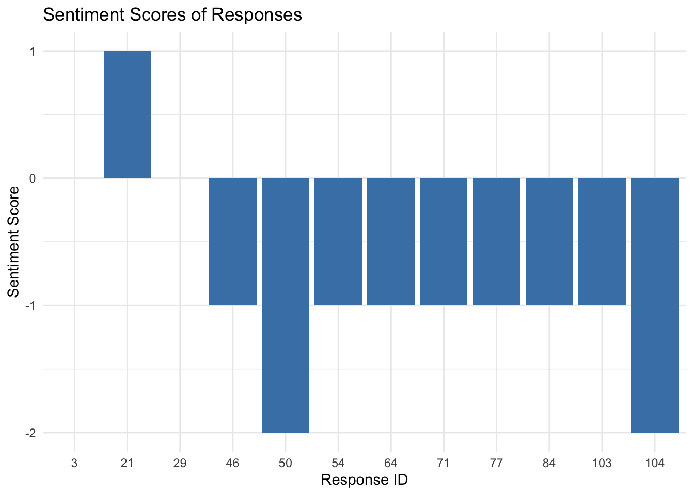
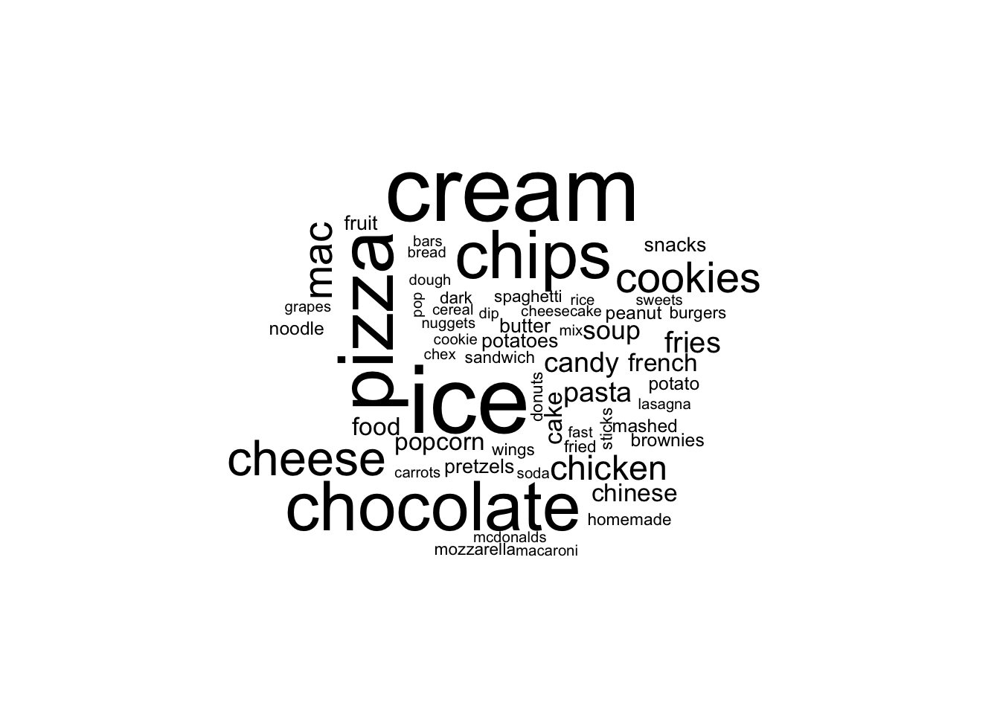
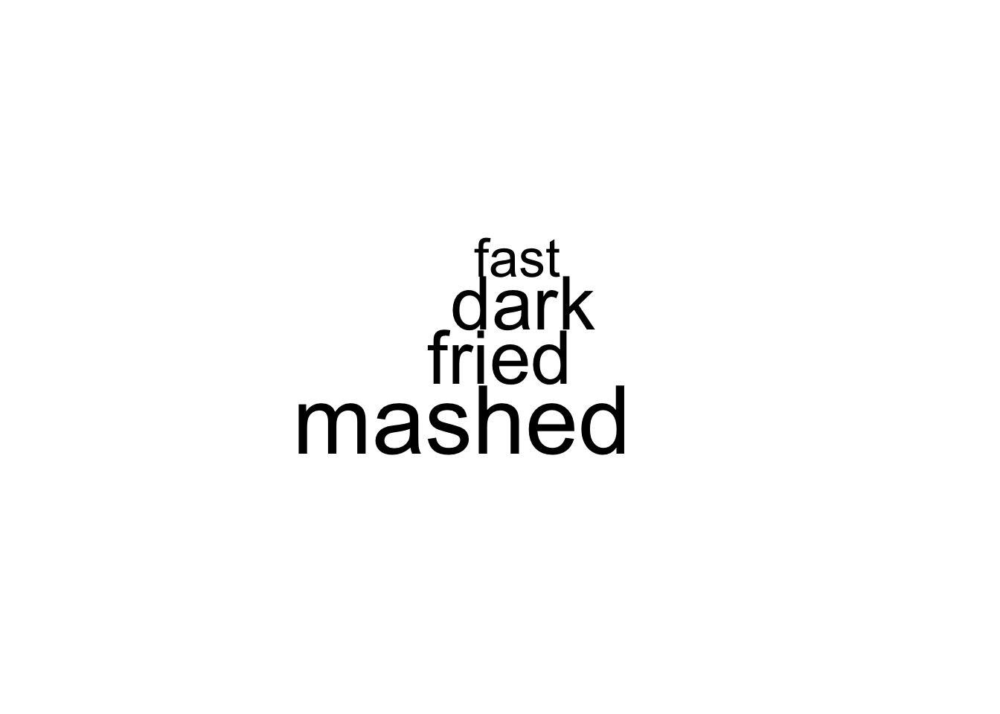

The process of extracting meaningful patterns, themes, or metrics from textual data.
Open-ended responses provide rich insights beyond numeric scales.
Examples:
Customer feedback
employee engagement surveys
policy evaluation.
Goals:
Discover hidden themes.
Measure sentiments and opinions.
Support data-driven decision-making.
8.2 An example
In this session, we will analyze a set of data that includes information on food choices, nutrition, preferences, childhood favorites, and other information from college students. There are 126 responses from students of Mercyhurst University.
For practice, we will focus on the “comfort_food - List 3-5 comfort foods that come to mind.”
# Required packages for this handoutlibrary(dplyr)library(tidyr)library(stringr)library(ggplot2)library(tidytext)library(quanteda)library(wordcloud)library(sentimentr)library(topicmodels)library(SnowballC)library(broom)food <-read.csv("https://raw.githubusercontent.com/Wenchao-Ma/Data/main/Food/food_coded.csv",na.strings =c("nan"))# Keep non-missing comfort food responses and create a response idresponse_text <- food %>%transmute(id =row_number(), response = comfort_food) %>%filter(!is.na(response), response !="")head(response_text)
id response
1 1 none
2 2 chocolate, chips, ice cream
3 3 frozen yogurt, pizza, fast food
4 4 Pizza, Mac and cheese, ice cream
5 5 Ice cream, chocolate, chips
6 6 Candy, brownies and soda.
8.2.1 Data cleaning
The code below shows how to clean the text data by removing special characters and hashtags, converting the text to lowercase, and tokenizing it into individual words.
# Remove special characters and hashtagsclean_text <- stringr::str_replace_all(response_text$response[33], "[^[:alnum:]\\s]", "")print(clean_text)
[1] "Grandmas Chinese Peruvian food from back home and sushi"
Note:
[^ … ]: Negation Brackets The caret ^ at the beginning means “not” or “exclude.” This makes the pattern match any character not listed inside the brackets.
[:alnum:]: Alphanumeric Characters This is a built-in character class in R. It matches letters (a-z, A-Z) and digits (0-9).
\s: Whitespace Characters \s matches any whitespace character, including spaces, tabs, and line breaks. The double backslash \ is used because R requires escaping special characters.
The function matches any character that is not an alphanumeric character or a whitespace character.
8.2.2 Lowercasing
# Convert to lowercaselower_text <-tolower(response_text$response[34])print(lower_text)
[1] "ice cream, cookies, chinese food, and chicken nuggets "
8.2.3 Tokenization
Split text into individual words or sentences using tidytext or tokenizers. The default tokenizing is for words, but other options include characters, n-grams, sentences, lines, paragraphs, or separation around a regex pattern.
Now that the data is in one-word-per-row format.
Also, all words are by default converted to lower case, which means we don’t need to do this convertion separately.
# Tokenize into wordstokenized_words <- response_text %>%unnest_tokens(output = word, input = response)tokenized_words %>%slice_head(n =10)
stop words are words that are not useful for an analysis, typically extremely common words such as “the”, “of”, “to”, and so forth in English. We can remove stop words with an anti_join() function.
The stop_words dataset in the tidytext package contains stop words from three lexicons - either “onix”, “SMART”, or “snowball”. See help page for more information.
data(stop_words)stop_words %>%slice_head(n =10)
# A tibble: 10 × 2
word lexicon
<chr> <chr>
1 a SMART
2 a's SMART
3 able SMART
4 about SMART
5 above SMART
6 according SMART
7 accordingly SMART
8 across SMART
9 actually SMART
10 after SMART
# Remove stopwordsfiltered_words <- tokenized_words %>%anti_join(stop_words, by ="word")filtered_words %>%slice_head(n =10)
anti_join() return all rows from x without a match in y.
8.3 Sentiment Analysis
Sentiment analysis (SA), also known as Emotion Detection and Opinion Mining, is a field of research using Natural Language Processing (NLP) technique to identify and quantify people’s opinions, emotions, and attitudes expressed in text. The SA approach is broadly categorized into three types:
lexicon-based,
artificial intelligence (AI)-based, and
hybrid approaches that combine both methods.
Lexicon-based approach relies on comparing sentiment words to a predefined set of seed words tagged with sentiment values (e.g., positive, negative, or neutral). These values are aggregated to calculate an overall sentiment score for a document.
Example
“I recently started using ChatGPT to assist with my learning tasks, and overall, it’s been a fantastic experience. The tool provides quick, accurate responses, and helps me brainstorm ideas effectively. It’s also incredibly easy to use and integrates smoothly into my workflow. Occasionally, I need to refine the prompts for more specific answers, but overall, it has significantly improved my productivity. I’m really impressed with how much it helps me get learning done efficiently.”
From a document-level perspective, the overall sentiment leans more positive than negative, allowing it to be classified as positive.
8.4 Sentiments database
there are a variety of methods and dictionaries that exist for evaluating the opinion or emotion in text. The tidytext package provides access to several sentiment lexicons. Three general-purpose lexicons are
AFINN
bing, and
nrc
All three of these lexicons are based on unigrams, i.e., single words. These lexicons contain many English words and the words are assigned scores for positive/negative sentiment, and also possibly emotions like joy, anger, sadness, and so forth.
The nrc lexicon categorizes words in a binary fashion (“yes”/“no”) into categories of positive, negative, anger, anticipation, disgust, fear, joy, sadness, surprise, and trust.
The bing lexicon categorizes words in a binary fashion into positive and negative categories.
The AFINN lexicon assigns words with a score that runs between -5 and 5, with negative scores indicating negative sentiment and positive scores indicating positive sentiment.
The function get_sentiments() allows us to get specific sentiment lexicons with the appropriate measures for each one.
if (requireNamespace("textdata", quietly =TRUE)) {get_sentiments("nrc") %>%slice_head(n =20)} else {message("Install 'textdata' to use the NRC lexicon: install.packages('textdata')")}get_sentiments("bing") %>%slice_head(n =20)
Not every English word is in the lexicons because many English words are pretty neutral. It is important to keep in mind that these methods do not take into account qualifiers before a word, such as in “no good” or “not true”; a lexicon-based method like this is based on unigrams only.
Dictionary-based methods like the ones we are discussing find the total sentiment of a piece of text by adding up the individual sentiment scores for each word in the text.
The R code below identify the corresponding sentiments for each word in students’ responses:
id word sentiment
1 3 frozen negative
2 3 fast positive
3 21 fast positive
4 29 hot positive
5 29 jerky negative
6 46 fried negative
7 50 fried negative
8 50 mashed negative
9 54 fried negative
10 64 dark negative
11 71 squash negative
12 77 mashed negative
13 84 mashed negative
14 103 mashed negative
15 104 dark negative
16 104 dark negative
Note that many words that do not have any sentiment labels were removed. Then, we can counts the number of positive and negative words for each response_id
We can draw a plot to show every student’s sentiment score:
ggplot(sentiment_scores, aes(x =factor(id), y = sentiment_score)) +geom_bar(stat ="identity", fill ="steelblue") +labs(title ="Sentiment Scores of Responses", x ="Response ID", y ="Sentiment Score") +theme_minimal()

8.5Most common words - wordclouds
One advantage of having a data frame with both sentiment and word is that we can analyze word counts that contribute to each sentiment. The code below draws the wordclouds based on the filtered words:
filtered_words %>%count(word) %>%with(wordcloud(word, n, min.freq =2,max.words =100))

You may find that the words in the cloud may not be that interesting. We can use the words that are related to sentiment lexicons:
sentiment_match %>%count(word) %>%with(wordcloud(word, n, min.freq =2,max.words =100))

The analysis above is based on unigram or each word. It’s classification for some responses is not accurate. An example is “course is not too difficult but challenging enough!!”
An alternative is to conduct sentiment analysis at sentence level.
Key: <element_id>
element_id word_count sd ave_sentiment
<int> <int> <num> <num>
1: 1 1 NA 0.0000000
2: 2 4 NA 0.3000000
3: 3 5 NA 0.5142956
4: 4 6 NA 0.0000000
5: 5 4 NA 0.3000000
6: 6 4 NA 0.0000000
7: 7 6 NA 0.2449490
8: 8 4 NA 0.0000000
9: 9 4 NA 0.0000000
10: 10 6 NA 0.2449490
11: 11 7 NA 0.2267787
12: 12 5 NA 0.2683282
13: 13 4 NA 0.0000000
14: 14 4 NA 0.3000000
15: 15 6 NA 0.0000000
16: 16 4 NA 0.0000000
17: 17 5 NA 0.0000000
18: 18 4 NA 0.0000000
19: 19 3 NA 0.3464102
20: 20 3 NA 0.0000000
element_id word_count sd ave_sentiment
<int> <int> <num> <num>
The sentiment object in this example will be a data.table including the following columns:
element_id — The id number of the review
word_count — The word count of the review
sd — The standard deviation of the sentiment score of the sentences in the review
ave_sentiment — The average sentiment score of the sentences in the review
The most interesting variable is the ave_sentiment, which is the sentiment of the review in one number. The number can take positive or negative values and expresses the valence and the polarity of the sentiment.
From this analysis, student #33 is labelled as “positive” now. However, student #34 is still “negative.”
8.6 Topic Analysis
Topic modeling describes an unsupervised machine learning technique that exploratively identifies latent topics based on frequently co-occurring words. Thus, we attempt to infer latent topics in texts based on measuring manifest co-occurrences of words.
First, install required R packages:
# install.packages(c("tidyverse", "tidytext", "topicmodels"))# Required packages were loaded in the setup chunk at the top.
tidy_text <- response_text %>%unnest_tokens(word, response) %>%anti_join(stop_words, by ="word")
Then, we need to create a document-term matrix:
dtm <- tidy_text %>%count(id, word) %>%cast_dtm(id, word, n)
we can fit a Latent Dirichlet Allocation (LDA) model with three topics:
lda_model <-LDA(dtm, k =3, control =list(seed =888))lda_model
A LDA_VEM topic model with 3 topics.
Next step is to examine the topics and their relation with the document:
It seems that it is not easy to interpret the topics. Let us remove some terms from the list:
custom_words <-tibble(word=c("instructor","lecture","lectures","class","found"))updated_text <- tidy_text %>%anti_join(custom_words, by ="word")dtm <- updated_text %>%count(id, word) %>%cast_dtm(id, word, n)lda_model <-LDA(dtm, k =2, control =list(seed =888))lda_model
---title: "Open-Ended Question Analysis"format: html: include-after-body: code-result-tabs.html---## Why text analysis?The process of extracting meaningful patterns, themes, or metrics from textual data.Open-ended responses provide rich insights beyond numeric scales.Examples:- Customer feedback- employee engagement surveys- policy evaluation.Goals:- Discover hidden themes.- Measure sentiments and opinions.- Support data-driven decision-making.## An exampleIn this session, we will analyze a set of data that includes information on food choices, nutrition, preferences, childhood favorites, and other information from college students. There are 126 responses from students of Mercyhurst University.For practice, we will focus on the "comfort_food - List 3-5 comfort foods that come to mind."```{r}# Required packages for this handoutlibrary(dplyr)library(tidyr)library(stringr)library(ggplot2)library(tidytext)library(quanteda)library(wordcloud)library(sentimentr)library(topicmodels)library(SnowballC)library(broom)food <-read.csv("https://raw.githubusercontent.com/Wenchao-Ma/Data/main/Food/food_coded.csv",na.strings =c("nan"))# Keep non-missing comfort food responses and create a response idresponse_text <- food %>%transmute(id =row_number(), response = comfort_food) %>%filter(!is.na(response), response !="")head(response_text)```### Data cleaningThe code below shows how to clean the text data by removing special characters and hashtags, converting the text to lowercase, and tokenizing it into individual words.```{r}# Remove special characters and hashtagsclean_text <- stringr::str_replace_all(response_text$response[33], "[^[:alnum:]\\s]", "")print(clean_text)```Note:\[\^ ... \]: Negation Brackets The caret \^ at the beginning means "not" or "exclude." This makes the pattern match any character not listed inside the brackets.\[:alnum:\]: Alphanumeric Characters This is a built-in character class in R. It matches letters (a-z, A-Z) and digits (0-9).\\s: Whitespace Characters \\s matches any whitespace character, including spaces, tabs, and line breaks. The double backslash \\ is used because R requires escaping special characters.The function matches any character that is not an alphanumeric character or a whitespace character.### Lowercasing```{r}# Convert to lowercaselower_text <-tolower(response_text$response[34])print(lower_text)```### TokenizationSplit text into individual words or sentences using tidytext or tokenizers. The default tokenizing is for words, but other options include characters, n-grams, sentences, lines, paragraphs, or separation around a regex pattern.Now that the data is in one-word-per-row format.Also, all words are by default converted to lower case, which means we don't need to do this convertion separately.```{r}# Tokenize into wordstokenized_words <- response_text %>%unnest_tokens(output = word, input = response)tokenized_words %>%slice_head(n =10)```### Stop wordsstop words are words that are not useful for an analysis, typically extremely common words such as “the”, “of”, “to”, and so forth in English. We can remove stop words with an anti_join() function.The stop_words dataset in the tidytext package contains stop words from three lexicons - either "onix", "SMART", or "snowball". See help page for more information.```{r}data(stop_words)stop_words %>%slice_head(n =10)``````{r}# Remove stopwordsfiltered_words <- tokenized_words %>%anti_join(stop_words, by ="word")filtered_words %>%slice_head(n =10)```::: callout-note- `anti_join()` return all rows from `x` with**out** a match in `y`.:::## Sentiment AnalysisSentiment analysis (SA), also known as Emotion Detection and Opinion Mining, is a field of research using Natural Language Processing (NLP) technique to identify and quantify people’s opinions, emotions, and attitudes expressed in text. The SA approach is broadly categorized into three types:- lexicon-based,- artificial intelligence (AI)-based, and- hybrid approaches that combine both methods.Lexicon-based approach relies on comparing sentiment words to a predefined set of seed words tagged with sentiment values (e.g., positive, negative, or neutral). These values are aggregated to calculate an overall sentiment score for a document.::: callout-note## Example“I recently started using ChatGPT to assist with my learning tasks, and overall, it’s been a fantastic experience. The tool provides quick, accurate responses, and helps me brainstorm ideas effectively. It’s also incredibly easy to use and integrates smoothly into my workflow. Occasionally, I need to refine the prompts for more specific answers, but overall, it has significantly improved my productivity. I’m really impressed with how much it helps me get learning done efficiently.”:::From a document-level perspective, the overall sentiment leans more positive than negative, allowing it to be classified as positive.## Sentiments databasethere are a variety of methods and dictionaries that exist for evaluating the opinion or emotion in text. The tidytext package provides access to several sentiment lexicons. Three general-purpose lexicons are- AFINN- bing, and- nrcAll three of these lexicons are based on unigrams, i.e., single words. These lexicons contain many English words and the words are assigned scores for positive/negative sentiment, and also possibly emotions like joy, anger, sadness, and so forth.- The nrc lexicon categorizes words in a binary fashion (“yes”/“no”) into categories of positive, negative, anger, anticipation, disgust, fear, joy, sadness, surprise, and trust.- The bing lexicon categorizes words in a binary fashion into positive and negative categories.- The AFINN lexicon assigns words with a score that runs between -5 and 5, with negative scores indicating negative sentiment and positive scores indicating positive sentiment.The function [`get_sentiments()`](https://juliasilge.github.io/tidytext/reference/get_sentiments.html) allows us to get specific sentiment lexicons with the appropriate measures for each one.```{r}if (requireNamespace("textdata", quietly =TRUE)) {get_sentiments("nrc") %>%slice_head(n =20)} else {message("Install 'textdata' to use the NRC lexicon: install.packages('textdata')")}get_sentiments("bing") %>%slice_head(n =20)```::: callout-cautionNot every English word is in the lexicons because many English words are pretty neutral. It is important to keep in mind that these methods do not take into account qualifiers before a word, such as in “no good” or “not true”; a lexicon-based method like this is based on unigrams only.:::Dictionary-based methods like the ones we are discussing find the total sentiment of a piece of text by adding up the individual sentiment scores for each word in the text.The R code below identify the corresponding sentiments for each word in students' responses:```{r}sentiment_match <- filtered_words %>%inner_join(get_sentiments("bing")) sentiment_match %>%slice_head(n =20)```Note that many words that do not have any sentiment labels were removed. Then, we can counts the number of `positive` and `negative` words for each `response_id````{r}sentiment_scores <- sentiment_match %>%count(id, sentiment) %>%complete(id, sentiment =c("negative", "positive"), fill =list(n =0)) %>%pivot_wider(names_from = sentiment, values_from = n, values_fill =0) %>%mutate(sentiment_score = positive - negative)sentiment_scores %>%slice_head(n =20)```We can draw a plot to show every student's sentiment score:```{r}ggplot(sentiment_scores, aes(x =factor(id), y = sentiment_score)) +geom_bar(stat ="identity", fill ="steelblue") +labs(title ="Sentiment Scores of Responses", x ="Response ID", y ="Sentiment Score") +theme_minimal()```## **Most common words - wordclouds**One advantage of having a data frame with both sentiment and word is that we can analyze word counts that contribute to each sentiment. The code below draws the wordclouds based on the filtered words:```{r}filtered_words %>%count(word) %>%with(wordcloud(word, n, min.freq =2,max.words =100))```You may find that the words in the cloud may not be that interesting. We can use the words that are related to sentiment lexicons:```{r}sentiment_match %>%count(word) %>%with(wordcloud(word, n, min.freq =2,max.words =100))```The analysis above is based on unigram or each word. It's classification for some responses is not accurate. An example is "course is not too difficult but challenging enough!!"An alternative is to conduct sentiment analysis at sentence level.```{r}response_text %>%unnest_tokens(sentence, response, token ="sentences") %>%slice_head(n =20)```To conduct sentiment analysis at sentence level, we use sentimentr package.```{r}sentiment=sentiment_by(response_text$response)head(sentiment, 20)```The sentiment object in this example will be a data.table including the following columns:- **element_id** — The id number of the review- **word_count** — The word count of the review- **sd** — The standard deviation of the sentiment score of the sentences in the review- **ave_sentiment** — The average sentiment score of the sentences in the reviewThe most interesting variable is the **ave_sentiment**, which is the sentiment of the review in one number. The number can take positive or negative values and expresses the valence and the polarity of the sentiment.From this analysis, student #33 is labelled as "positive" now. However, student #34 is still "negative."## Topic AnalysisTopic modeling describes an unsupervised machine learning technique that exploratively identifies latent topics based on frequently co-occurring words. Thus, we attempt to infer **latent** topics in texts based on measuring **manifest** co-occurrences of words.First, install required R packages:```{r}# install.packages(c("tidyverse", "tidytext", "topicmodels"))# Required packages were loaded in the setup chunk at the top.``````{r}tidy_text <- response_text %>%unnest_tokens(word, response) %>%anti_join(stop_words, by ="word")```Then, we need to create a document-term matrix:```{r}dtm <- tidy_text %>%count(id, word) %>%cast_dtm(id, word, n)```we can fit a Latent Dirichlet Allocation (LDA) model with three topics:```{r}lda_model <-LDA(dtm, k =3, control =list(seed =888))lda_model```Next step is to examine the topics and their relation with the document:```{r}topics <- broom::tidy(lda_model, matrix ="beta")top_terms <- topics %>%group_by(topic) %>%slice_max(beta, n =10) %>%ungroup() %>%arrange(topic, -beta)top_terms %>%mutate(term =reorder_within(term, beta, topic)) %>%ggplot(aes(term, beta, fill =factor(topic))) +geom_col(show.legend =FALSE) +facet_wrap(~ topic, scales ="free") +coord_flip() +scale_x_reordered()```It seems that it is not easy to interpret the topics. Let us remove some terms from the list:```{r}custom_words <-tibble(word=c("instructor","lecture","lectures","class","found"))updated_text <- tidy_text %>%anti_join(custom_words, by ="word")dtm <- updated_text %>%count(id, word) %>%cast_dtm(id, word, n)lda_model <-LDA(dtm, k =2, control =list(seed =888))lda_modeltopics <- broom::tidy(lda_model, matrix ="beta")top_terms <- topics %>%group_by(topic) %>%slice_max(beta, n =10) %>%ungroup() %>%arrange(topic, -beta)top_terms %>%mutate(term =reorder_within(term, beta, topic)) %>%ggplot(aes(term, beta, fill =factor(topic))) +geom_col(show.legend =FALSE) +facet_wrap(~ topic, scales ="free") +coord_flip() +scale_x_reordered()```